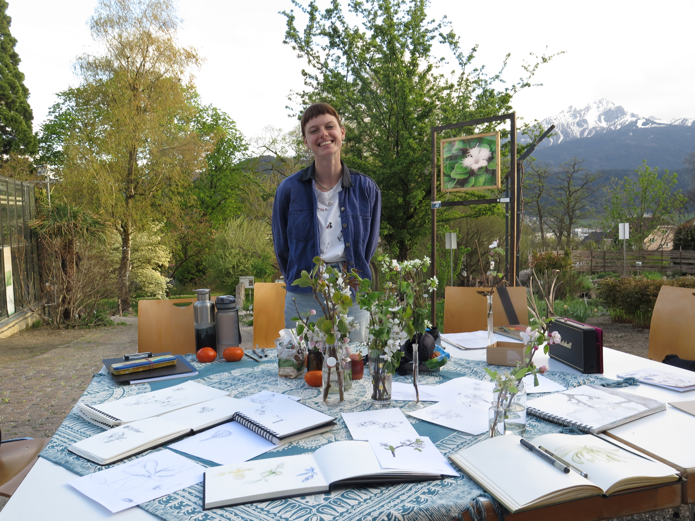

Careful observation is at the heart of our drawing sessions. We work with living plants directly in the Botanical Garden — always observing the garden's rules: no plant parts may be picked and beds must not be entered.
The Illustration Club is not a course but an open meeting for working together, exchanging ideas, and learning from one another. No prior experience is required — curiosity is enough. We meet once a month with different thematic focuses.
Materials are provided for a donation — of course you are welcome to bring your own.
To register, please email friederike.westrich[at]web.de — you will then receive details about meeting point and travel.